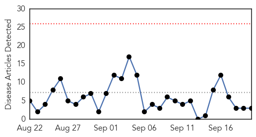
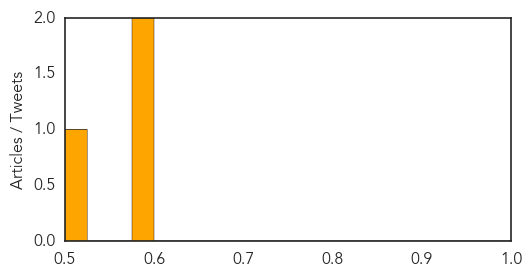
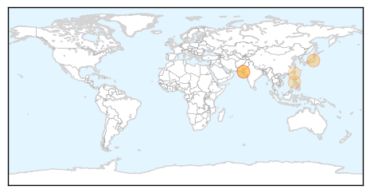

Cholera
30-Day Web Trend
0 alerts, 0 warnings

30-Day Twitter Trend
0 alerts, 0 warnings

Article Locations

Article Confidences
Top Articles:
Top Tweets:
-
No tweets found for Sep 20, 2014
Dengue Fever
30-Day Web Trend
4 alerts, 11 warnings

30-Day Twitter Trend
0 alerts, 0 warnings
Article Locations
Article Confidences

Top Articles:
- 0.990
- Tokyo officials confirm 1st dengue case from Ueno Park, total cases at 133
- 0.961
- Beware of mosquitoes: ‘No dengue fever treatment without training’
- 0.950
- Khawaja Salman declares training essential to treat dengue patients
- 0.827
- Two more infected with dengue virus in Swat
- 0.703
- Gov't warns public from communicable diseases amid flooding
- 0.701
- Communicable diseases warning issued after floods in Philippines
Top Tweets:
- 0.513
- Flavivirus news: Beware of mosquitoes: 'No dengue fever treatment without training' - The Expre... http://t.co/UIHZZRMxwU pathogenposse